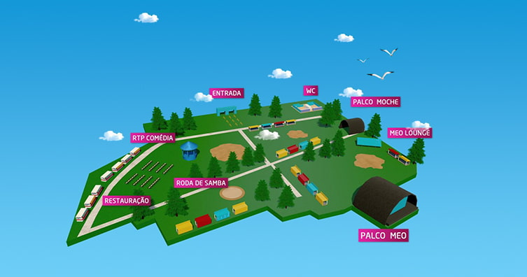

Contagem decrescente para o Meo Marés Vivas 2024
O festival regressa este verão a Vila Nova de Gaia. Take That, Ornatos Violeta, James Arthur e Snow Patrol são alguns dos artistas confirmados.
Por Joana Araújo Cardoso
 Imagem: MASqueTICKET
Imagem: MASqueTICKET
O evento está marcado para os dias 19, 20 e 21 de julho e conta com grandes nomes da música nacional e internacional.
O festival arranca com o concerto de Take That. A banda inglesa passará pelo palco principal do Marés Vivas 2024, como parte da digressão “The Life On Tour”. D’Zrt, D.A.M.A e Syro são os artistas portugueses apontados para o dia.
A animação continua no segundo dia, ao som do músico norte-americano Ben Harper e dos britânicos James Arthur e Rag’N’Bone. A noite termina com a atuação de Marisa Liz.
O último dia encerra o festival com a música de Snow Patrol. Louis Tomlinson, Ornatos Violeta e António Zambujo são as atuações que se seguem, numa mistura de sons que dá o tom de despedida ao evento.
Os bilhetes diários custam 45 euros (48,32 euros com taxas) e o passe geral de três dias custa 90 euros (96,64 euros com taxas). Os bilhetes estão à venda nos locais habituais, sendo possível adquiri-los online através do site da Meo Blueticket ou da FNAC.
O evento terá lugar em Vila Nova de Gaia, no antigo Parque de Campismo da Madalena. O recinto estará em funcionamento entre as 16h e as 3h durante os dias de concerto.

Imagem: Echo BoomerPara além do palco MEO, apresenta-se o Moche Stage, o Palco Sapo Comédia, o Palco Coca-Cola e o Palco Roda de Samba. O espaço conta ainda com uma zona de restauração.
Para saber como chegar ao local, pode consultar o site oficial do Meo Marés Vivas. A organização disponibiliza informações e direções para o local para quem planeia viajar de carro, autocarro, comboio ou metro.
O site sugere ainda locais para ficar alojado durante o festival. A oferta inclui parques de campismo, hotéis, pensões e residências perto do recinto.
O Meo Marés Vivas prepara-se para a sua 16ª edição, prometendo três dias de música e convívio. Veja abaixo o vídeo de introdução ao evento deste ano, disponibilizado pela MEO.